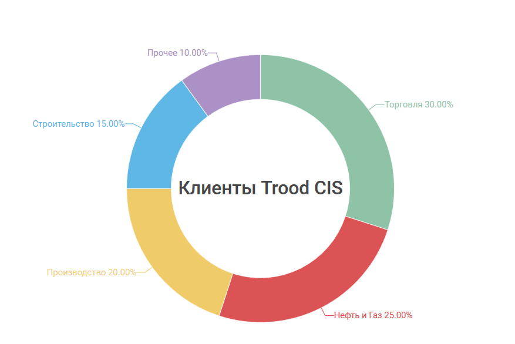

Клиенты Trood
Продукты и решения Trood универсальны с точки зрения их отраслевого применения. Наша команда обладает большим опытом автоматизации предприятий: от торговых сетей до нефтедобывающих компаний. В большинстве случаев отношения Trood с Клиентами носят конфиденциальный характер. Для получения списка компаний, использующих Trood, обратитесь к нам любым удобным способом.
Ниже вы можете ознакомиться с примерной структурой нашего портфеля проектов и некоторыми примерами внедрения Trood.
